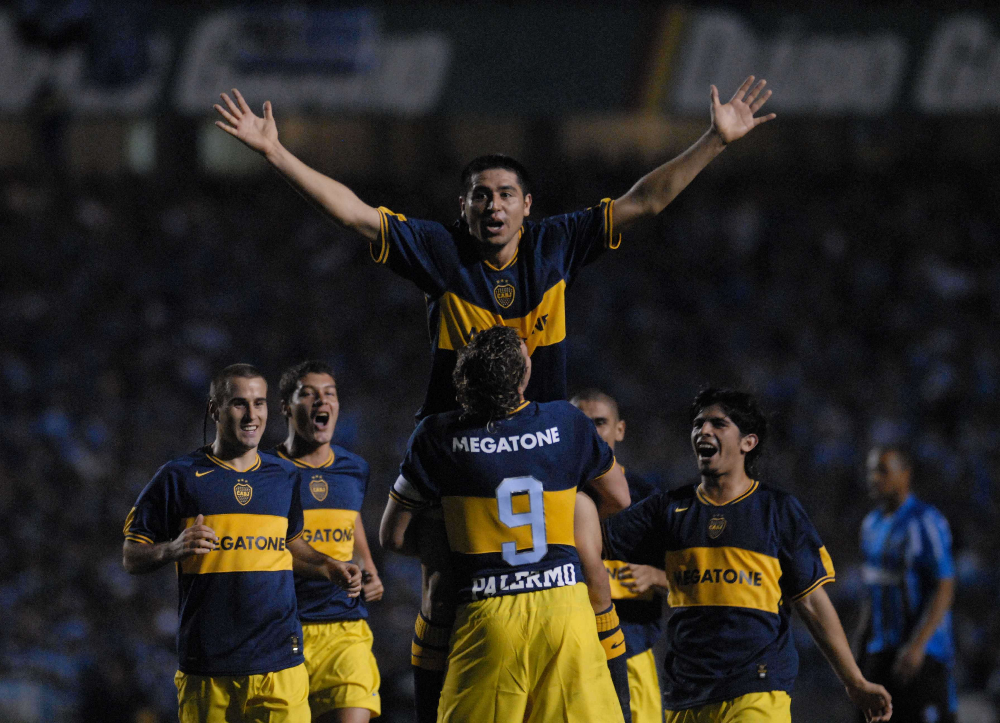

Juan Roman Riquelme
The legend of Boca Juniors

Roman celebrating his goal in the final of the Libertadores Cup. Possibly the best performance of his career.
Juan Roman Riquelme made his debut for Boca Juniors on November 10, 1996.
From that moment on, Roman won the hearts of all the fans of Boca.
Over the years, Roman went through different clubs leaving his mark on international soccer. But his house was always the Bombonera.
Here are his greatest achievements with the blue and gold jersey:
- He won 3 Copa Libertadores in the years 2000, 2001 in a row. The last one was obtained in 2007, being the MVP of the competition.
- He won 1 Intercontinental Cup in 2000 against Los galacticos of Real Madrid
- He won 6 local cups. Among them, the Argentine league and cup.
- Currently, with Roman as vice president of the club, Boca won 6 more cups.